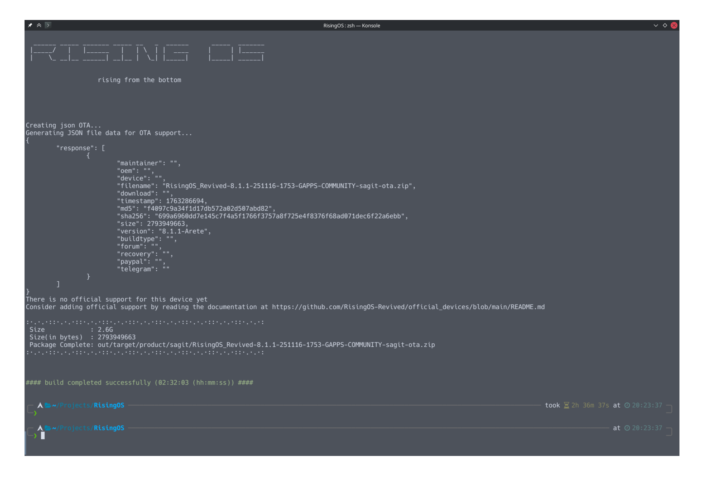

为小米 6 编译 RisingOS
记录如何从源码开始编译 RisingOS。
前言
由于小米 6 没有 RisingOS 的官方支持，只好自己从源码编译。
准备
首先需要安装repo，在 Arch Linux 上仅需sudo pacman -S repo即可安装。
可能还需要安装 Github 的大文件优化插件，在 Arch Linux 也是只需要sudo pacman -S git-lfs。
其次需要约 300G 左右的空间，为之后拉取源码以及编译预留空间（主要占大头的还是 RisingOS 的源码）。
获取 RisingOS 源码
在安装repo后，根据RisingOS Android 源码仓库的提示获取源码。
repo init -u https://github.com/RisingOS-Revived/android -b sixteen --git-lfs
repo sync -c --no-clone-bundle --optimized-fetch --prune --force-sync -j$(nproc --all)获取设备相关源码
在获取了基本的源码后还需要一些设备专有代码。
添加的方式是在 RisingOS 源码目录下的.repo/local_manifests/roomservice.xml中定义。
<?xml version="1.0" encoding="UTF-8"?>
<manifest>
<project path="device/xiaomi/sagit" name="LineageOS/android_device_xiaomi_sagit" revision="lineage-22.2" />
<project path="device/xiaomi/msm8998-common" name="LineageOS/android_device_xiaomi_msm8998-common" revision="lineage-22.2" />
<project path="hardware/xiaomi" name="Lineageos/android_hardware_xiaomi" />
<project path="kernel/xiaomi/msm8998" name="Lineageos/android_kernel_xiaomi_msm8998" revision="lineage-22.2"/>
</manifest>之后再进行一下repo sync，同步源码。
补丁
不打补丁会报错：vendor_camera_prop未定义，以及找不到 AntHalService-Soong。
verndor_camera_prop问题由此提交引入导致。
AntHalService-Soong 没有找到相关的源码，反正注释了能过编译就行，BUG 以后再说。
补丁参考：
project device/lineage/sepolicy/
diff --git a/common/private/property_contexts b/common/private/property_contexts
index 81c9784..8a65320 100644
--- a/common/private/property_contexts
+++ b/common/private/property_contexts
@@ -6,8 +6,8 @@ ro.odm.cast.ssid_suffix u:object_r:odm_cast_prop:s0
vendor.camera.aux.packageexcludelist u:object_r:vendor_persist_camera_prop:s0
vendor.camera.aux.packagelist u:object_r:vendor_persist_camera_prop:s0
vendor.camera.skip_unconfigure.packagelist u:object_r:vendor_persist_camera_prop:s0
-ro.vendor.camera.res.fmq.size u:object_r:vendor_camera_prop:s0
-ro.vendor.camera.req.fmq.size u:object_r:vendor_camera_prop:s0
+# ro.vendor.camera.res.fmq.size u:object_r:vendor_camera_prop:s0
+# ro.vendor.camera.req.fmq.size u:object_r:vendor_camera_prop:s0
# Bluetooth
bluetooth.hci.disabled_commands u:object_r:bluetooth_config_prop:s0
project device/xiaomi/msm8998-common/
diff --git a/msm8998.mk b/msm8998.mk
index 804ee64..eed6381 100644
--- a/msm8998.mk
+++ b/msm8998.mk
@@ -126,8 +126,8 @@ PRODUCT_COPY_FILES += \
frameworks/native/data/etc/android.hardware.audio.low_latency.xml:$(TARGET_COPY_OUT_VENDOR)/etc/permissions/android.hardware.audio.low_latency.xml
# ANT+
-PRODUCT_PACKAGES += \
- AntHalService-Soong
+# PRODUCT_PACKAGES += \
+# AntHalService-Soong
# Bluetooth
PRODUCT_PACKAGES += \
注意：源码更新可能会引入其他问题，本文不保证时效性。
编译
编译命令参考：
# 首先保证你在RisingOS源码目录下
source build/envsetup.sh
riseup sagit userdebug
rise b -j$(nproc --all)等待编译完成即可。
附带一张编译完成截图。
